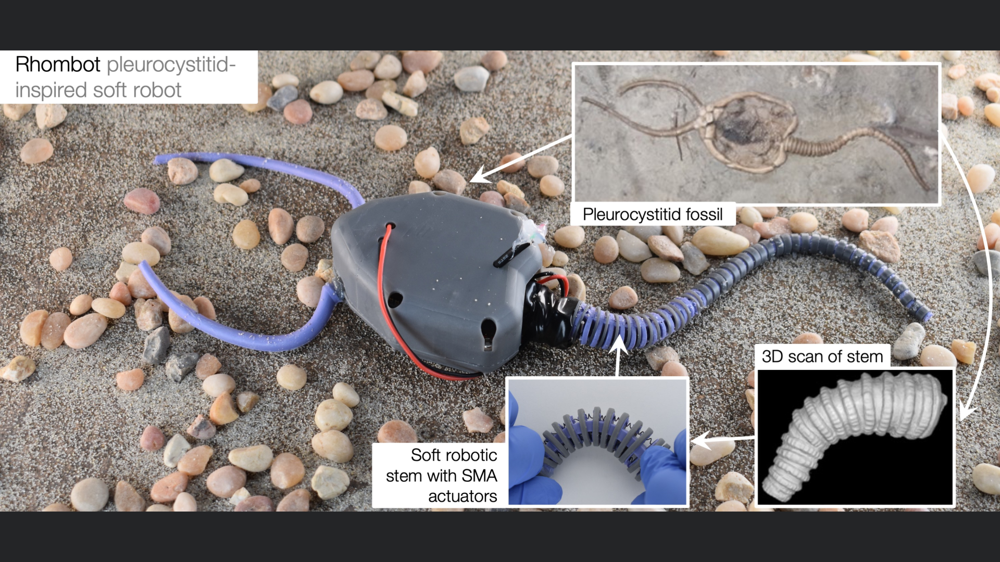

Paleorobotics
We are excited about the potential for robotics to contribute to paleontology by allowing us to ask and answer counterfactuals about fundamental animal behaviors when evidence is lacking in the fossil record. We recently published a paper in PNAS in which we recreated an extinct echinoderm, plerocystitid, and used simulation and a robot to make inferences about its locomotory behavior.

In the future, we hope to expand this work to examine other extinct species.
Publications
- R. Desatnik, Z. J. Patterson, P. Gorzelak, S. Zamora, P. LeDuc, and C. Majidi, “Soft robotics informs how an early echinoderm moved,” Proceedings of the National Academy of Sciences, Nov. 2023. Link